Sustentabilidade
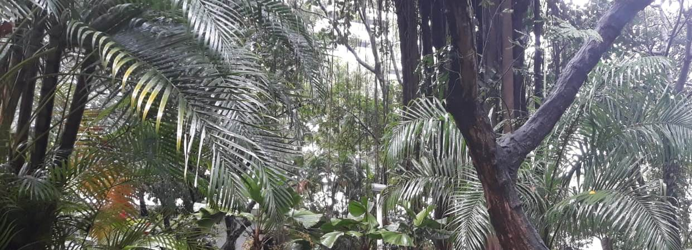
COMPROMISSO INSTITUCIONAL COM A SUSTENTABILIDADE
Política de Sustentabilidade Ambiental do CEFET/RJ
Saiba se seu projeto está alinhado com os objetivos da Política de Sustentabilidade Ambiental institucional?
Plano Diretor de Logística Sustentável do CEFET/RJ
Conheça as propostas de ações de sustentabilidade e de racionalização do uso de materiais e serviços e saiba o que é um Plano Diretor de Logística Sustentável (PLS).
Divisão de Estratégia para Sustentabilidade Ambiental Institucional
Entenda as competências e as ações referentes à gestão e à educação ambiental desenvolvidas.
COMISSÕES E COMITÊS INSTITUCIONAIS
Entre em contato com os membros:
- do Comitê de Sustentabilidade Ambiental Institucional (COSAI): sesai@cefet-rj.br
- da Comissão Central de Coleta Seletiva Solidária (CCCSS): cccss@cefet-rj.br
- da Comissão Interna de Conservação de Energia (CICE): sustentabilidade@cefet-rj.br
RELATÓRIOS DE SUSTENTABILIDADE
Acesse os resultados das iniciativas sustentáveis desenvolvidas nos últimos anos.
- Relatórios sustentáveis
Nas redes sociais, os resultados institucionais de SUSTENTABILIDADE são apresentados de forma "mais amigável" em:
https://www.instagram.com/painel.sustentabilidade.cefet?igsh=eGVmM3ZvaHRtY2U2
https://www.instagram.com/cccss.cefetrj?igsh=cHIzanhwY2Z5dTIy
AÇÕES DO CEFET/RJ
- GESTÃO
O CEFET/RJ desenvolve práticas sustentáveis em seus campi, bem como adota e divulga iniciativas que se enquadram nos eixos temáticos da sustentabilidade.
- Economia e Conservação de Energia
- Gerenciamento e Uso Sustentável de Água e Efluente
- Gestão de Resíduos Sólidos
- Sensibilização e Capacitação
- Licitações sustentáveis
- Qualidade de vida no ambiente de trabalho
- Obras Sustentáveis
Com apoio de PARCEIROS INTERNOS e EXTERNOS ao CEFET/RJ, a sustentabilidade encontra-se fortalecida e presente na gestão, bem como em outros eixos da educação: PESQUISA, ENSINO E EXTENSÃO.
- PESQUISA
O CEFET/RJ estimula o desenvolvimento de grupos de pesquisa e de projetos de iniciação científica, junto a seus estudantes de pós-graduação, de graduação e do ensino médio-técnico, no tocante à temática da sustentabilidade. Dessa forma, busca-se a integração de todos os níveis de ensino.
- Ecoeconomias, ecoinovações e a abordagem do ciclo de vida (ECCOA)
- Grupo de Empreendedorismo Energia Meio Ambiente e Tecnologia
- Meio Ambiente e Eficiência Energética
- Sistemas Energéticos e Ambientais (GSEA)
Mapa do Bosque do CEFET-RJ Unidade Maracanã:
-1 (2).png)
No gráfico 1, a seguir, durante o período de 2019 a 2023, verifica-se o desenvolvimento de projetos de pesquisa, do tipo iniciação científica, que foram coordenados por professores dos campi do Cefet/RJ e estão relacionados à temática da sustentabilidade.
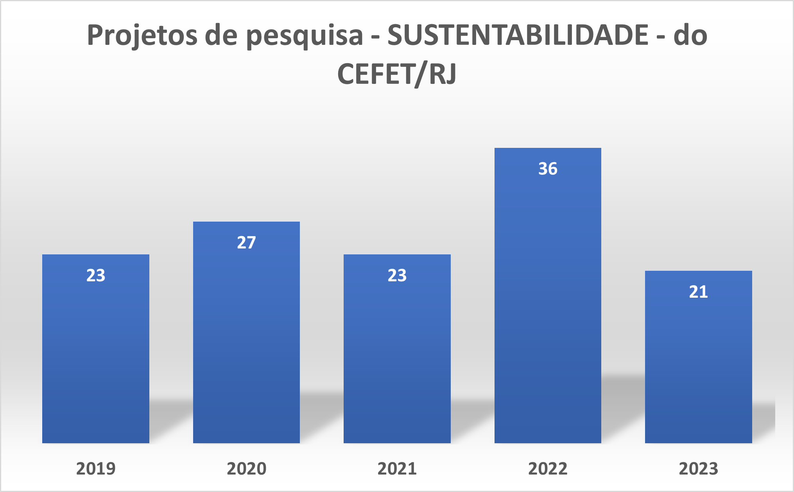
Gráfico 1 – Projetos de pesquisa na área da sustentabilidade (2019 a 2023)
Fonte: Elaboração própria a partir de COPET (2019, 2020, 2021, 2022 e 2023). Disponível em: http://dippg.cefet-rj.br/index.php/pt/copet Acesso em 7 Dez. 2023.
- ENSINO
O CEFET/RJ possui cursos integrados, subsequentes, de graduação e de pós-graduação, que preparam seus alunos, futuros profissionais, para atuarem em diversos segmentos, respeitando o meio ambiente.
Técnico
- Curso Técnico em Sistemas de Energias Renováveis
“(...) atuar em empresas públicas e privadas, bem como gerir seu próprio negócio. Empresas que atuam na instalação, manutenção, comercialização e utilização de equipamentos e sistemas que utilizam energia renovável; Grupos de pesquisa que desenvolvam projetos na área de sistemas de energia renovável; Órgãos da administração pública em setores específicos de energia renovável. (...) em diferentes segmentos da sociedade preocupados com a sustentabilidade socioeconômica-ambiental” (Objetivo do Curso Técnico Subsequente ao Ensino Médio Sistemas de Energias Renováveis, 2016)
Graduação
- Bacharel em Engenharia Ambiental
“(...) visa formar profissionais aptos a atuar em várias áreas, tanto em organizações públicas ou privadas, quanto no meio acadêmico. O profissional da área terá uma sólida formação técnica nas áreas afins à biologia, ecologia, saneamento, recursos hídricos, gestão de resíduos, planejamento ambiental e urbano, entre outras. Desse modo, os egressos contribuirão para o desenvolvimento científico e tecnológico principalmente na avaliação, especificação e proposição de soluções ambientais, além de desenvolver projetos de conservação e recuperação dos recursos naturais, da biodiversidade, das condições sanitárias e ambientais, avaliar riscos ambientais e elaborar estudos/planos que visem à redução dos impactos determinados por ações humanas ou naturais.” (Projeto pedagógico do curso de Engenharia Ambiental, 2016)
Outros CURSOS DE GRADUAÇÃO tratam a questão da sustentabilidade em seus contextos.
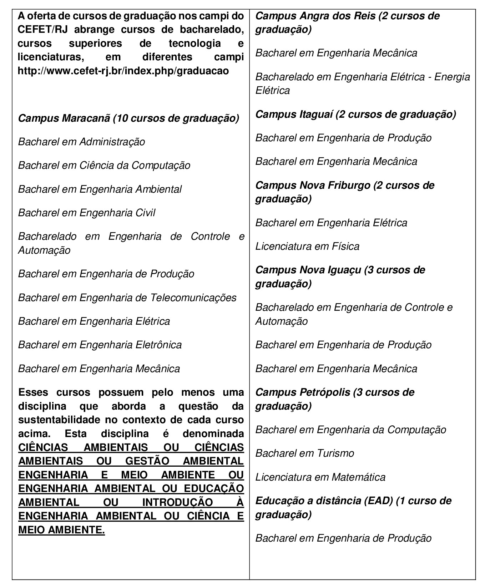
Pós-Graduação (Stricto sensu)
- Mestrado Acadêmico em Desenvolvimento Regional e Sistemas Produtivos (PPPRO)
- Mestrado e Doutorado Acadêmico em Engenharia de produção e Sistemas (PPDSP)
Os dois cursos de pós-graduação apresentam linhas de pesquisa relacionadas à temática da sustentabilidade ou desenvolvimento sustentável.
- EXTENSÃO
O CEFET/RJ apresenta grupos e projetos de extensão, coordenados por servidores e que contam com a participação de alunos, buscando sensibilizar a sociedade no tocante à sustentabilidade.
Projetos de extensão
Grupos de extensão voltados para a sustentabilidade:
- Enactus
- Ramo IEEE
- E-Wolf
No gráfico 2, a seguir, observa-se o desenvolvimento de projetos de extensão, relacionados à área temática de SUSTENTABILIDADE, dentre outras áreas definidas (Educação, Tecnologia e Produção, Comunicação, Direitos Humanos e Justiça, Saúde e Trabalho) pelo Departamento de Extensão e Assuntos Comunitários (DEAC/ DIREX/ CEFET/RJ), no período de 2019 a 2023.
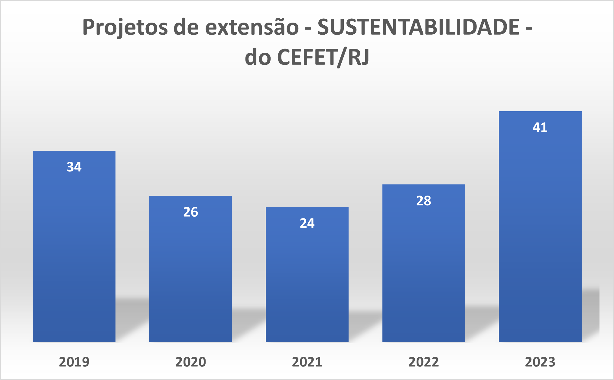
Gráfico 2 – Projetos de extensão voltados à temática da Sustentabilidade (2019 a 2023)
Fonte: Elaboração própria a partir de DEAC (2019, 2020, 2021, 2022 e 2023). Disponível em: https://www.cefet-rj.br/index.php/formularios-acoes-de-extensao/acoes-deac-anos-anteriores Acesso 15 Dez. 2023.
CONQUISTAS DO CEFET/RJ
No dia 5 de dezembro de 2023 foi publicado o resultado do “2023 UI GreenMetric World University Rankings” < https://greenmetric.ui.ac.id/ >, que é uma espécie de ranking de sustentabilidade entre instituições de ensino superior (IES) no mundo e apresenta os índices mundiais de sustentabilidade, que mensuram o empenho da instituição no desenvolvimento de ações e práticas voltadas à sustentabilidade.
A Universitas Indonesia (UI) iniciou os rankings universitários mundiais em 2010, mais tarde ficou conhecido como UI GreenMetric World University Rankings para medir os esforços de sustentabilidade dos campi universitários. Em 2010, participaram 95 universidades de 35 países: 18 da América, 35 da Europa, 40 da Ásia e 2 da Austrália, em 2021, foram 956 instituições de ensino superior de mais de 84 países em todo o mundo, em 2022, foram 1050 instituições e em 2023, 1183 instituições.
O objetivo desse índice é ser uma ferramenta de autoavaliação da sustentabilidade para IES, contribuir para discursos acadêmicos sobre sustentabilidade na educação dos campi e informar a comunidade acadêmica, governos, agências ambientais internacionais e locais e a sociedade sobre programas e projetos de sustentabilidade nos campi. No que tange aos benefícios auferidos, a internacionalização e reconhecimento da instituição, além do networking gerado e aumento da consciência e responsabilidade socioambiental.
A instituição deve apresentar e demonstrar evidências relacionadas às seis categorias de sustentabilidade que são avaliadas e fazem parte do índice mundial.
A seguir, observa-se as posições que o Cefet/RJ obteve durante os 3 anos que submeteu ao ranking de sustentabilidade entre as IES no Brasil.
Ambiente e Infraestrutura
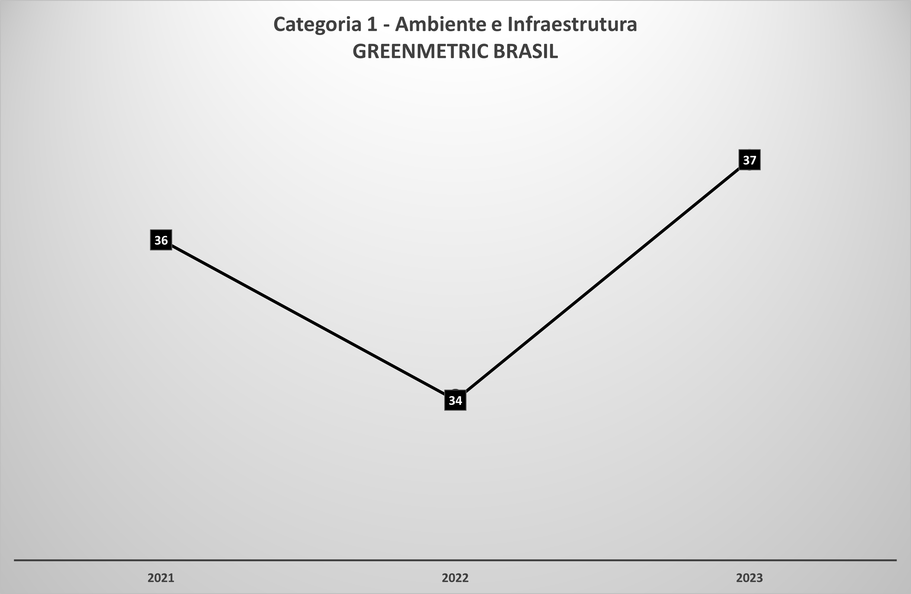
Energia e mudanças climáticas
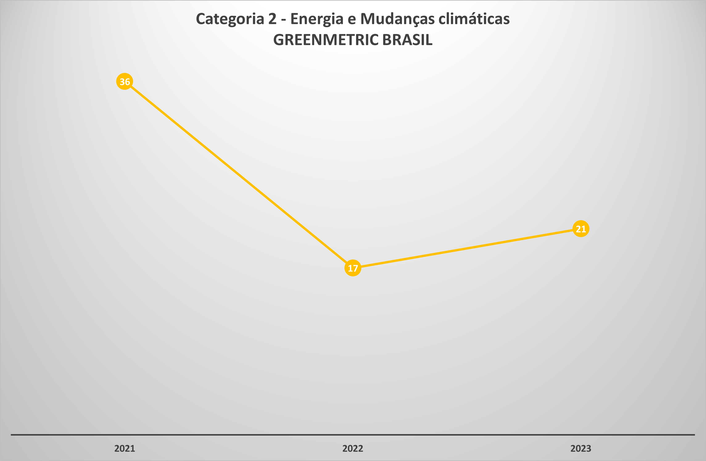
Resíduos
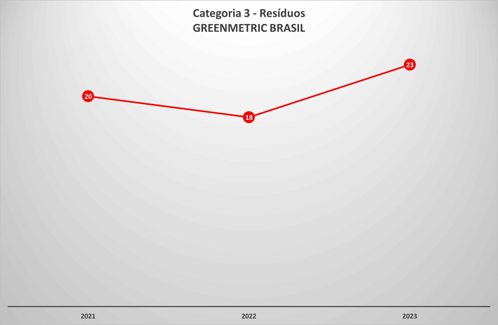
Água
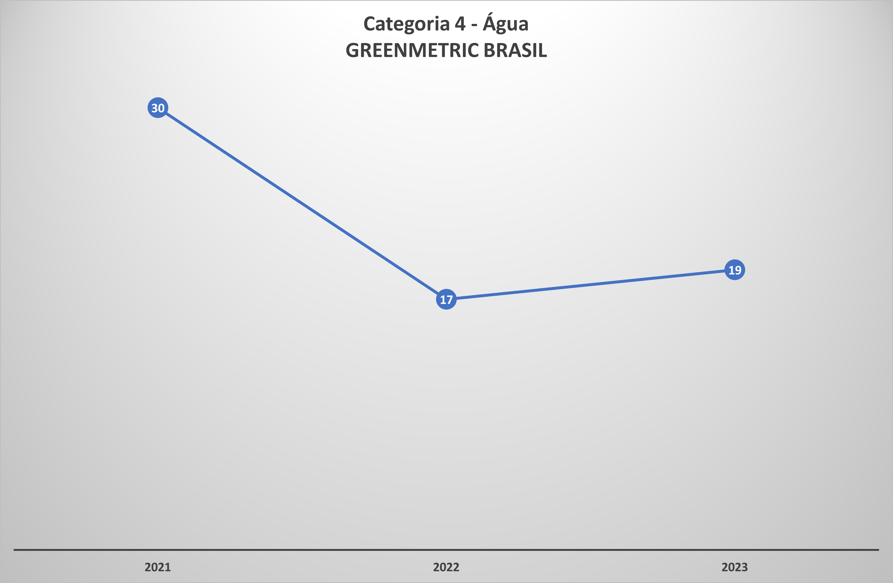
Mobilidade
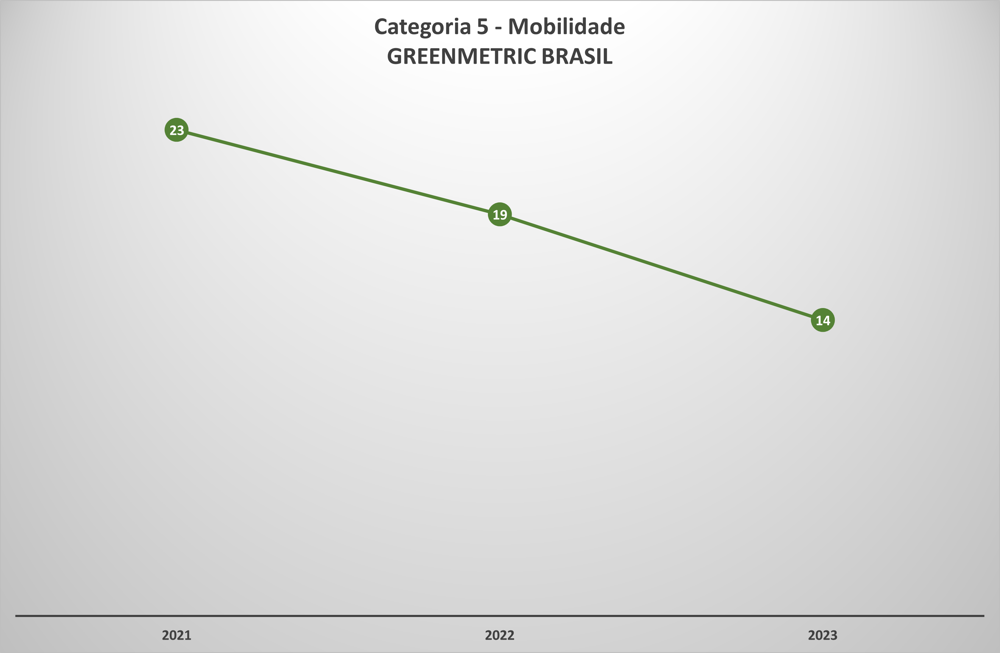
Educação e pesquisa
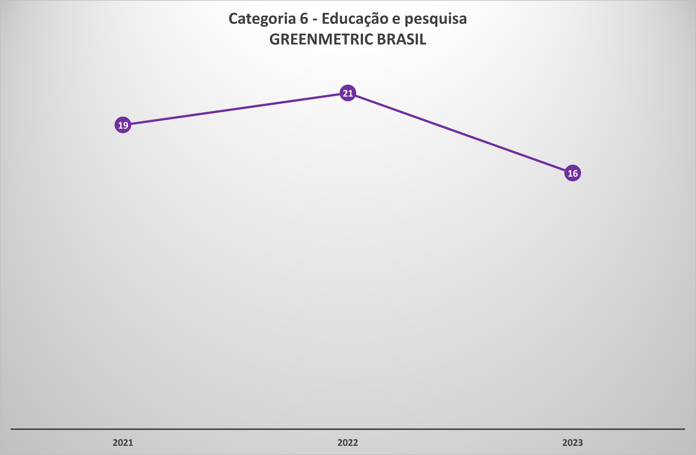
Em 2021, o CEFET/RJ ficou na posição 646 dentre 956 instituições de ensino superior no mundo e no país na posição 31 dentre 40. No estado do Rio de Janeiro, estiveram presentes: UFF e PUC-RJ.
Em 2022, o CEFET/RJ subiu 140 posições, ficando na posição 505 dentre 1050 instituições de ensino superior no mundo e no país na posição 20 dentre 40. No Rio de Rio de Janeiro, participaram: PUC-RJ, UFF e UFRJ.
Em 2023, o CEFET/RJ ficou na posição 560 dentre 1183 instituições de ensino superior no mundo. Apesar da posição diferente do ano passado, a instituição ainda se encontra na primeira mediana, que equivale aos cinquenta por cento mais bem colocados no ranking mundial. No país, o CEFET/RJ está na posição 23 dentre 43. No estado do Rio de Janeiro, estiveram presentes também a UFF e UFRJ.
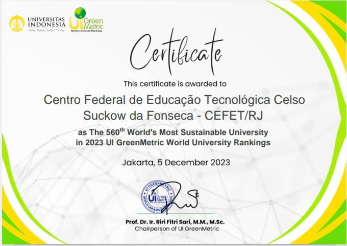
O resultado completo do ranking em 2023 https://greenmetric.ui.ac.id/rankings/overall-rankings-2023
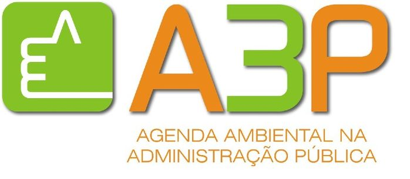
Em 2023, o Cefet/RJ renovou sua adesão ao PROGRAMA AGENDA AMBIENTAL NA ADMINISTRAÇÃO PÚBLICA - A3P com a publicação do Certificado de Adesão ao Programa A3P, que celebra o compromisso da instituição com o MMA, visando estimular a implementação de práticas de sustentabilidade.
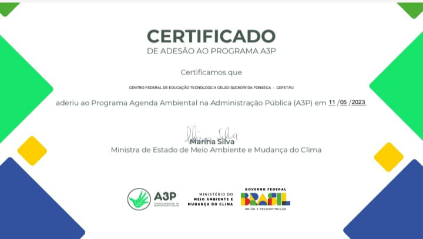
Também em 2024, recebeu o Selo de Monitoramento da Agenda Ambiental na Administração Pública (Selo A3P), que é concedido, anualmente, para as organizações que tenham ações de compromisso com o meio ambiente, como a adoção de tecnologias mais eficientes, a economia de matéria-prima e o incentivo à reutilização de insumos, melhorando a qualidade de vida da sua comunidade.

São elegíveis ao Selo os órgãos que aderiram à Agenda A3P e que preenchem, consolidam e enviam para a plataforma MMA Ressoa, anualmente, os dados da instituição, como o consumo de água, energia elétrica e combustível, a quantidade de contratações/licitações sustentáveis e a sensibilização e a capacitação dos servidores, por meio de cursos, campanhas e palestras de conscientização.
Cabe destacar que o Cefet/RJ, desde janeiro de 2018, faz parte das instituições que aderiram formalmente à Agenda Ambiental na Administração Pública (A3P). E, desde então, já recebeu 5 selos: em 2020, por conta do preenchimento dos dados na plataforma MMA Ressoa de 2019 ; em 2021, por conta do preenchimento na plataforma MMA Ressoa dos dados de 2020 ; em 2022, por conta do preenchimento na plataforma MMA Ressoa dos dados de 2021, em 2023, por conta do preenchimento na plataforma MMA Ressoa dos dados de 2022 e em 2024, por conta do preenchimento na plataforma MMA Ressoa dos dados de 2023.
No ano de 2023, foram registradas no país 30 instituições de ensino superior (IES), das 233 organizações dos setores público e privado, que formalmente aderiram à A3P. No Rio de Janeiro, apenas três IES mantêm a adesão: o CEFET/RJ, a Fundação Oswaldo Cruz (FIOCRUZ) e o Instituto de Pesquisas Jardim Botânico do Rio de Janeiro – JBRJ.
No Cefet/RJ, o programa A3P é gerenciado pela Divisão de Estratégia para a Sustentabilidade Ambiental Institucional (DISAI), vinculada à Diretoria de Gestão Estratégica (DIGES), com apoio de outros setores e departamentos.
ADESÃO DO CEFET/RJ AO PROGRAMA A3P

Em 2023, durante a 60ª CONCERJ - CONVENÇÃO DE CONTABILIDADE DO ESTADO DO RIO DE JANEIRO, o CEFET/RJ foi reconhecido com o Prêmio “Robert Gray” de Sustentabilidade pelo Conselho Regional de Contabilidade do Rio de Janeiro (CRCRJ).
O CEFET/RJ ficou em 2º Lugar, atrás do Município de Niterói, na categoria 1 – Inovação na gestão, que compreende empresas contábeis, órgãos públicos, entidades privadas e do Terceiro Setor. Nessa categoria, os finalistas apresentaram iniciativas inovadoras que incorporam principios e ações de sustentabilidade e produzam resultados socioambientais positivos para a sociedade. Servindo de inspiração ou referência para empresas contábeis e organizações públicas e privadas.
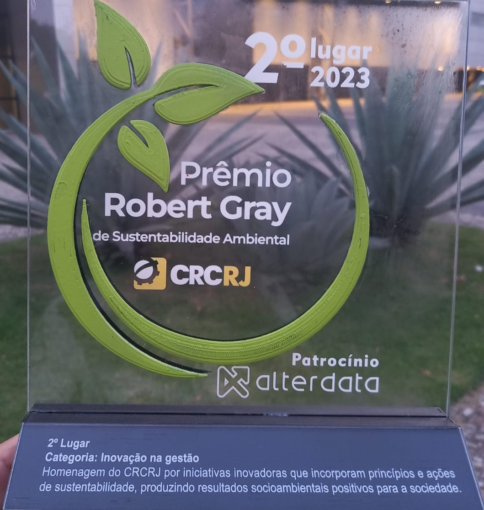
O CEFET/RJ apresentou duas iniciativas, que tiveram a participação do protagonismo estudantil e que se mantém a mais de três anos:
- o projeto da Coleta Seletiva Solidária - https://www.cefet-rj.br/index.php/green-benchmarking-institucional/residuos
- o projeto Comunicação de vazamento de água em banheiros - https://www.cefet-rj.br/index.php/green-benchmarking-institucional/agua
De acordo com a Resolução CRCRJ n. 608, de 31 de outubro de 2022, que aprova o Prêmio “Robert Gray” de Sustentabilidade Ambiental CRCRJ, as iniciativas premiadas constarão do Banco de Melhores Práticas de Sustentabilidade da Comissão de Sustentabilidade Ambiental do Conselho Regional de Contabilidade do Rio de Janeiro.
Essa Comissão vem incentivando profissionais de contabilidade a participarem e difundirem “as boas práticas para a sustentabilidade ambiental, sejam como agentes transformadores da sociedade e propagadores desse hábito salutar junto a seus colaboradores e empresas clientes”. O CEFET/RJ tem a contadora Thais Paiva de Oliveira, responsável pelas informações contábeis institucionais.
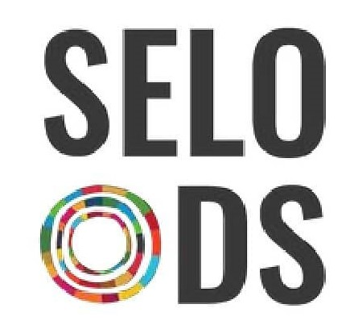
CEFET/RJ recebe o Selo ODS EDU 2023
O CEFET/RJ e mais 38 instituições de ensino no país foram reconhecidas pelos projetos desenvolvidos na área de educação, que contribuem ativamente para os Objetivos de Desenvolvimento Sustentável (ODS), com o SELO ODS EDU 2023.
O SELO ODS EDU é uma iniciativa de extensão do Programa Especial UnB 2030: Sustentabilidade e Desenvolvimento Inclusivo, em parceria com o Instituto Selo Social, o Grupo de Trabalho da Sociedade da Sociedade Civil para a Agenda 2030, a Roda das Minas e a equipe do FIB2030 - Felicidade Interna Bruta e Agenda 2030, que estimula a criação de boas práticas que possam ser replicadas por outras instituições brasileiras.
O projeto de extensão do CEFET/RJ que foi premiado com o SELO ODS EDU 2023 foi Odoya Rio Maracanã, coordenado pelos professores Claudia Fragelli (CCGGTUR) e Julio Antunes (DEAMB), que tem como objetivo ressignificar a relação da população local com o Rio Maracanã, visando à implementação dos ODS da Agenda 2030. Para atingir esse objetivo, buscou-se promover o letramento socioambiental junto a comunidade do Cefet/RJ e demais atores sociais que atuam na Bacia do Rio Maracanã (alinhado ao ODS 4), estimular a realização de eventos e ações de mobilização e sensibilização para a construção de cidades e comunidades inclusivas, seguras, resilientes e sustentáveis (alinhado ao ODS 11), além de realizar visitas de campo acompanhando o curso do Rio Maracanã, asegurando a melhoria da qualidade das águas do rio, que alimenta a Baía de Guanabara.
Para o ano de 2024, espera-se que mais projetos possam participar do SELO ODS EDU, despertando os diversos atores sociais envolvidos no exercício de cidadania socioambiental e inspirando a elaboração de políticas públicas em consonância com as premissas da sustentabilidade.
Para conhecer os projetos e as instituições de ensino que foram certificadas com o SELO ODS EDU 2023, acesse o link https://www.seloods.org/sobre-o-selo
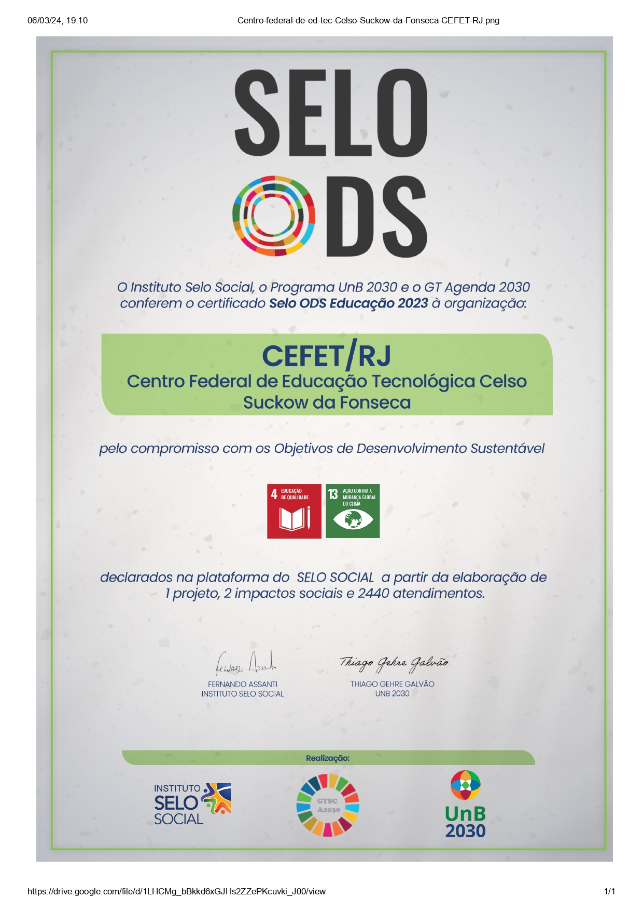

Redes Sociais